Note
Go to the end to download the full example code or to run this example in your browser via Binder.
Finger Tapping Analysis with Kernel Flow2 Data#
This example follows closely the GLM Analysis (Measured) mne-nirs finger tapping example with some minor variations, using fNIRS data from the Kernel Flow 2 (KF2) system.
KF2 is a time-domain (TD)-fNIRS system, and so some aspects of the
snirf file i/o are different to other mne-nirs examples which all
use continuous-wave data. This example thus serves as a (minimal) demo
and test of mne-nirs for TD data, and also as an example of fNIRS
brain activity measurements from a high-density (~5000 channel)
whole-head montage.
The dataset was collected at the Centre for Addiction and Mental Health (CAMH) in Toronto in August 2025. It consists of two 13-minute runs of the Kernel Finger tapping task, which is part of the standard task battery distributed with the Flow2 system. Additional recordings with the same task are also available on the Kernel Website. The experiment design follows the usual structure for motor tasks of this kind: three conditions (left-handed tapping, right-handed tapping, and no tapping + fixation cross), alternating pseudo-randomly. For the tapping conditions, a minimal hand diagram is displayed that shows red flashes on the fingertips, indicating which finger should be tapped on the thumb. The highlighted finger alternates every few seconds, with each finger change defining a trial. Here we do not make use of the full event-related component of the design, but do block-wise comparisons between the three conditions.
As with the main mne-nirs finger tapping example, the following demonstrates
an ‘Evoked’ (trial-averaging) and GLM-based analysis of this experiment.
There are some modifications made to the visualization code to accommodate the
(substantially) higher channel density, and also to demonstrate an alternative
(slightly cleaner) way of displaying symmetric contrasts.
# sphinx_gallery_thumbnail_number = 10
# Authors: Julien Dubois <https://github.com/jcrdubois>
# John D Griffiths <john.griffiths@utoronto.ca>
# Eric Larson <https://larsoner.com>
#
# License: BSD (3-clause)
# Importage
import os
import h5py
import numpy as np
import pandas as pd
from matplotlib import colors as mcolors
from matplotlib import pyplot as plt
from mne import Annotations, Epochs
from mne import events_from_annotations as get_events_from_annotations
from mne.channels import combine_channels
from mne.channels.layout import _find_topomap_coords
from mne.io.snirf import read_raw_snirf
from mne.viz import plot_compare_evokeds, plot_events, plot_topomap
from nilearn.plotting import plot_design_matrix
from mne_nirs.datasets import camh_kf_fnirs_fingertapping
from mne_nirs.experimental_design import create_boxcar, make_first_level_design_matrix
from mne_nirs.statistics import run_glm
Import raw NIRS data#
First we import the motor tapping data, These data are similar to those
described and used in the MNE fNIRS tutorial <mne:tut-fnirs-processing>
After reading the data we resample down to 1Hz to meet github memory constraints.
# first download the data
snirf_dir = camh_kf_fnirs_fingertapping.data_path()
snirf_file = os.path.join(
snirf_dir,
"sub-01",
"ses-01",
"nirs",
"sub-01_ses-01_task-fingertapping_nirs_HB_MOMENTS.snirf",
)
# now load into an MNE object
raw = read_raw_snirf(snirf_file).load_data().resample(1)
sphere = (0.0, -0.02, 0.006, 0.1) # approximate for the montage
Loading /home/circleci/mne_data/camh_kf_fnirs_fingertapping/sub-01/ses-01/nirs/sub-01_ses-01_task-fingertapping_nirs_HB_MOMENTS.snirf
Found jitter of 0.000062% in sample times.
Reading 0 ... 3030 = 0.000 ... 805.958 secs...
Probe information and source labels#
The MNE SNIRF reader stores source and detector 3D positions in each
channel’s loc field, and reads the original SNIRF source/detector
labels (e.g. module-based names like M020S01). We save the labels
now for use in identifying motor cortex modules later.
with h5py.File(snirf_file, "r") as f:
source_labels = [s.decode("UTF-8") for s in f["nirs/probe/sourceLabels"]]
print(f"Source labels (first 5): {source_labels[:5]}")
Source labels (first 5): ['M000S00', 'M000S01', 'M000S02', 'M001S00', 'M001S01']
Read event data from the SNIRF stim groups#
Unfortunately MNE didn’t load the block types so we don’t know whether a block is LEFT or RIGHT tapping. Fear not! the SNIRF file has it all, albeit in a convoluted format. Let’s reconstruct the information here:
stim1 b'StartBlock'
stim2 b'StartExperiment'
stim3 b'StartIti'
stim4 b'StartRest'
stim5 b'StartTrial'
Looks like “stim1” has the StartBlock event information, let’s dig in:
with h5py.File(snirf_file, "r") as file:
df_start_block = pd.DataFrame(
data=np.array(file["nirs"]["stim1"]["data"]),
columns=[col.decode("UTF-8") for col in file["nirs"]["stim1"]["dataLabels"]],
)
df_start_block
Ok, BlockType.Left and BlockType.Right look useful.
Now create properly labeled annotations with durations preserved
from the stim data, keeping only Left and Right tapping blocks.
Define the events#
mask_left = df_start_block["BlockType.Left"] == 1.0
mask_right = df_start_block["BlockType.Right"] == 1.0
mask_block = mask_left | mask_right
descriptions = np.where(mask_left, "Tapping/Left", "Tapping/Right")
orig_time = raw.annotations.orig_time
raw.set_annotations(
Annotations(
onset=df_start_block["Timestamp"].values[mask_block],
duration=df_start_block["Duration"].values[mask_block],
description=descriptions[mask_block],
orig_time=orig_time,
)
)
events, event_id = get_events_from_annotations(raw)
events
Used Annotations descriptions: [np.str_('Tapping/Left'), np.str_('Tapping/Right')]
array([[ 21, 0, 2],
[ 62, 0, 1],
[102, 0, 2],
[136, 0, 1],
[174, 0, 2],
[211, 0, 1],
[253, 0, 1],
[288, 0, 2],
[325, 0, 2],
[362, 0, 1],
[404, 0, 1],
[445, 0, 2],
[487, 0, 2],
[523, 0, 1],
[563, 0, 2],
[605, 0, 1],
[638, 0, 2],
[676, 0, 1],
[717, 0, 2],
[755, 0, 1]])
Plot the events
plot_events(events, event_id=event_id, sfreq=raw.info["sfreq"])
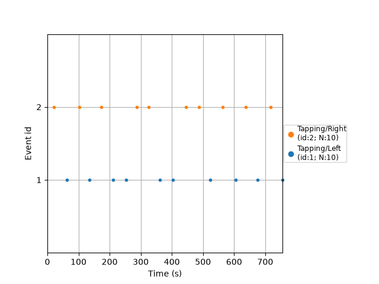
<Figure size 640x480 with 1 Axes>
Epoch the data#
The SNIRF Hb Moments file contains data that has been preprocessed quite extensively and is almost “ready for consumption”. Details of the preprocessing are outlined on the Kernel Docs . All that remains to be done is some filtering to focus on the “neural” band. We typically use a moving-average filter for detrending and a FIR filter for low-pass filtering. With MNE, we can use the available bandpass FIR filter to achieve similar effects.
raw_filt = raw.copy().filter(0.01, 0.1, h_trans_bandwidth=0.01, l_trans_bandwidth=0.01)
Filtering raw data in 1 contiguous segment
Setting up band-pass filter from 0.01 - 0.1 Hz
FIR filter parameters
---------------------
Designing a one-pass, zero-phase, non-causal bandpass filter:
- Windowed time-domain design (firwin) method
- Hamming window with 0.0194 passband ripple and 53 dB stopband attenuation
- Lower passband edge: 0.01
- Lower transition bandwidth: 0.01 Hz (-6 dB cutoff frequency: 0.01 Hz)
- Upper passband edge: 0.10 Hz
- Upper transition bandwidth: 0.01 Hz (-6 dB cutoff frequency: 0.11 Hz)
- Filter length: 331 samples (331.000 s)
A little bit of MNE syntax to epoch the data with respect to the events we just extracted:
Not setting metadata
20 matching events found
Setting baseline interval to [-5.0, 0.0] s
Applying baseline correction (mode: mean)
0 projection items activated
Using data from preloaded Raw for 20 events and 51 original time points ...
0 bad epochs dropped
Plot the evoked responses#
Let’s look again at the info loaded by MNE for each channel (source-detector pair)
epochs.info["chs"][0]
{'loc': array([-0.01239361, 0.08904527, 0.01066009, -0.01141136, 0.08921433,
0.00648209, -0.01337586, 0.08887621, 0.01483809, 1. ,
nan, nan]), 'unit_mul': 0 (FIFF_UNITM_NONE), 'range': 1.0, 'cal': 1e-06, 'kind': 1100 (FIFFV_FNIRS_CH), 'coil_type': 300 (FIFFV_COIL_FNIRS_HBO), 'unit': 6 (FIFF_UNIT_MOL), 'coord_frame': 0 (FIFFV_COORD_UNKNOWN), 'ch_name': 'S1_D1 hbo', 'scanno': 1, 'logno': 1}
Compute source-detector distances from channel positions stored in
the loc field (positions are in meters, convert to mm).
source_positions = np.array([ch["loc"][3:6] for ch in epochs.info["chs"]])
detector_positions = np.array([ch["loc"][6:9] for ch in epochs.info["chs"]])
sds = np.sqrt(np.sum((source_positions - detector_positions) ** 2, axis=1)) * 1000
Make evoked objects for the evoked response to LEFT and RIGHT tapping, and for the contrast left < right, for channels with a source-detector distance between 15-30mm
idx_channels = np.flatnonzero((sds > 15) & (sds < 30))
left_evoked = epochs["Tapping/Left"].average(picks=idx_channels)
right_evoked = epochs["Tapping/Right"].average(picks=idx_channels)
del epochs # save memory
left_right_evoked = left_evoked.copy()
left_right_evoked._data = left_evoked._data - right_evoked._data
right_left_evoked = left_evoked.copy()
right_left_evoked._data = right_evoked._data - left_evoked._data
Now plot the evoked data
chromophore = "hbo"
times = [0, 10, 20, 30, 40]
vlim = (-15, 15)
plot_kwargs = dict(
ch_type=chromophore,
vlim=vlim,
colorbar=False,
)
tm_kwargs = dict(
sensors=False,
image_interp="linear",
extrapolate="local",
contours=0,
show=False,
sphere=sphere,
)
fig, ax = plt.subplots(
figsize=(1.75 * len(times), 8),
nrows=4,
ncols=len(times),
sharex=True,
sharey=True,
layout="constrained",
)
left_evoked.plot_topomap(times, axes=ax[0], **plot_kwargs, **tm_kwargs)
right_evoked.plot_topomap(times, axes=ax[1], **plot_kwargs, **tm_kwargs)
left_right_evoked.plot_topomap(times, axes=ax[2], **plot_kwargs, **tm_kwargs)
right_left_evoked.plot_topomap(times, axes=ax[3], **plot_kwargs, **tm_kwargs)
ax[0][0].set_ylabel("LEFT")
ax[1][0].set_ylabel("RIGHT")
ax[2][0].set_ylabel("LEFT > RIGHT")
ax[3][0].set_ylabel("RIGHT > LEFT")
fig.suptitle(chromophore)
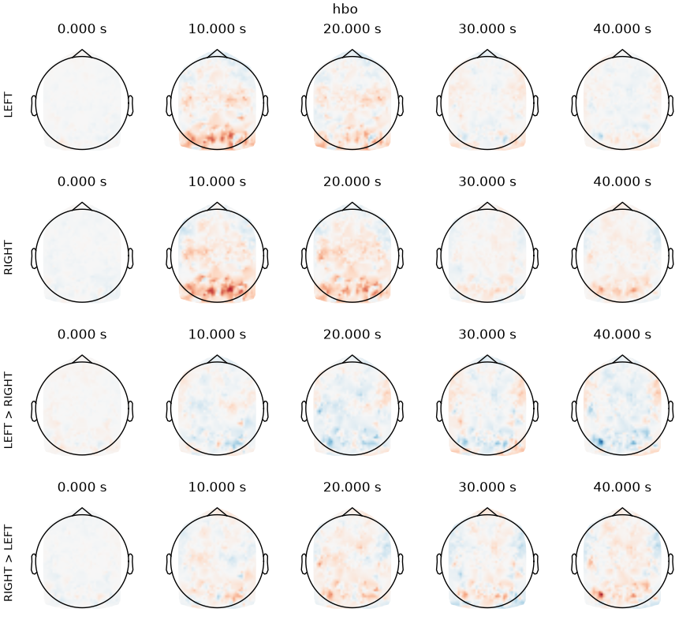
Text(0.5, 0.99479125, 'hbo')
Despite the absence of thresholding, we can discern:
LEFT tapping (first row): a nice hotspot in the right motor cortex at 10s
RIGHT tapping (second row): a nice hotspot in the left motor cortex at 10s
LEFT-RIGHT tapping (last row): hotspot in the right motor cortex, and negative counterpart in the left motor cortex, at 10s
Now let’s look at the time courses:
idx_sources = np.array(
[int(ch.split("_")[0][1:]) - 1 for ch in left_evoked.info["ch_names"]]
)
is_selected_hbo = np.array([ch.endswith("hbo") for ch in left_evoked.info["ch_names"]])
MODULE 21 is in the left motor cortex, MODULE 20 in the right motor cortex. We use the SNIRF source labels (saved earlier) to find these modules.
print("Channel numbers for module 20, sensor 01 and module 21, sensor 01")
print(np.flatnonzero(np.array(source_labels) == "M020S01"))
print(np.flatnonzero(np.array(source_labels) == "M021S01"))
is_left_motor = is_selected_hbo & (
idx_sources == np.flatnonzero(np.array(source_labels) == "M021S01")[0]
)
is_right_motor = is_selected_hbo & (
idx_sources == np.flatnonzero(np.array(source_labels) == "M020S01")[0]
)
Channel numbers for module 20, sensor 01 and module 21, sensor 01
[61]
[64]
Take a look at the KF2 channel locations, highlighting the motor cortex modules. Source 62 (M020S01) is in the right motor cortex, source 65 (M021S01) is in the left motor cortex. We pick HbO only to avoid duplicate positions (HbO and HbR share the same source-detector midpoint).
evoked_hbo = left_evoked.copy().pick("hbo")
pos_2d = _find_topomap_coords(evoked_hbo.info, picks=None, sphere=sphere)
idx_src_hbo = np.array(
[int(ch.split("_")[0][1:]) - 1 for ch in evoked_hbo.info["ch_names"]]
)
motor_idx = np.flatnonzero(
np.isin(
idx_src_hbo,
[source_labels.index("M020S01"), source_labels.index("M021S01")],
)
)
fig, ax = plt.subplots(figsize=(8, 8), layout="constrained")
ax.scatter(pos_2d[:, 0], pos_2d[:, 1], s=5, c="steelblue", alpha=0.3)
ax.scatter(
pos_2d[motor_idx, 0],
pos_2d[motor_idx, 1],
s=30,
c="red",
zorder=5,
label="Motor cortex (M020, M021)",
)
ax.legend(loc="upper right")
ax.set_aspect("equal")
ax.set_title("Kernel Flow 2 Channel Locations — HbO, 15-30 mm")
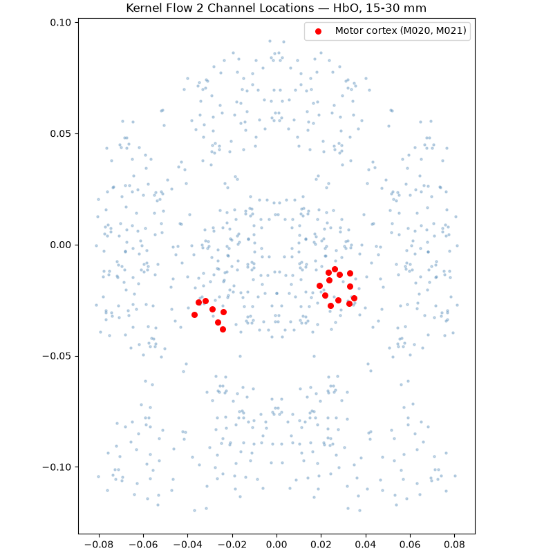
Text(0.5, 1.0, 'Kernel Flow 2 Channel Locations — HbO, 15-30 mm')
Now average all channels coming from source 20 or 21 formed with detectors between 15-30mm from the source
right_evoked_combined = combine_channels(
right_evoked,
{
"left_motor": np.flatnonzero(is_left_motor),
"right_motor": np.flatnonzero(is_right_motor),
},
)
left_evoked_combined = combine_channels(
left_evoked,
{
"left_motor": np.flatnonzero(is_left_motor),
"right_motor": np.flatnonzero(is_right_motor),
},
)
Applying baseline correction (mode: mean)
Applying baseline correction (mode: mean)
and plot the evoked time series for these channel averages
fig, axes = plt.subplots(figsize=(10, 5), ncols=2, sharey=True, layout="constrained")
plot_compare_evokeds(
dict(
left=left_evoked_combined.copy().pick_channels(["left_motor"]),
right=right_evoked_combined.copy().pick_channels(["left_motor"]),
),
legend="upper left",
axes=axes[0],
show=False,
show_sensors=False,
)
axes[0].set_title("Left motor cortex\n\n")
plot_compare_evokeds(
dict(
left=left_evoked_combined.copy().pick_channels(["right_motor"]),
right=right_evoked_combined.copy().pick_channels(["right_motor"]),
),
legend=False,
axes=axes[1],
show=False,
show_sensors=False,
)
axes[1].set_title("Right motor cortex\n\n")
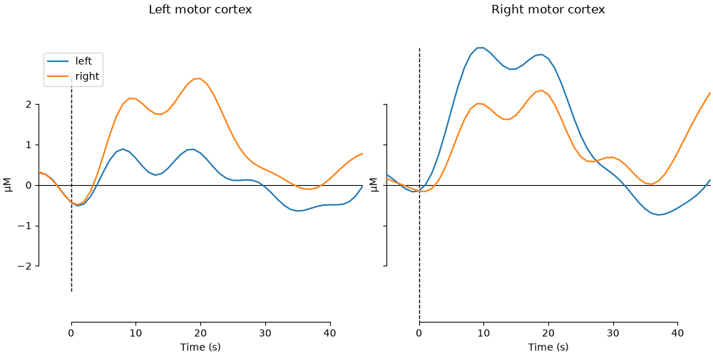
NOTE: pick_channels() is a legacy function. New code should use inst.pick(...).
NOTE: pick_channels() is a legacy function. New code should use inst.pick(...).
NOTE: pick_channels() is a legacy function. New code should use inst.pick(...).
NOTE: pick_channels() is a legacy function. New code should use inst.pick(...).
Text(0.5, 1.0, 'Right motor cortex\n\n')
GLM Analysis#
GLM analysis in MNE-NIRS is powered under the hood by Nilearn functionality.
Here we mostly followed the GLM Analysis (Measured) tutorial
First show how the boxcar design looks
stim_dur = np.mean(raw.annotations.duration)
s = create_boxcar(raw, stim_dur=stim_dur)
fig, ax = plt.subplots(figsize=(8, 3), layout="constrained")
ax.plot(raw.times, s)
ax.legend(["Left", "Right"], loc="upper right")
ax.set_xlabel("Time (s)")
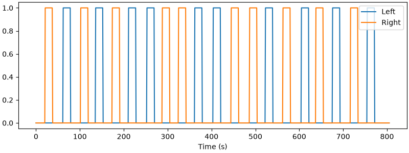
Used Annotations descriptions: [np.str_('Tapping/Left'), np.str_('Tapping/Right')]
Text(0.5, 18.503588541666666, 'Time (s)')
Now make a design matrix, including drift regressors, and plot
design_matrix = make_first_level_design_matrix(
raw,
# a "cosine" model is better, but for speed we'll use polynomial here
drift_model="polynomial",
drift_order=1,
high_pass=0.01, # Must be specified per experiment
hrf_model="glover",
stim_dur=stim_dur,
)
fig, ax = plt.subplots(figsize=(design_matrix.shape[1] * 0.5, 6), layout="constrained")
plot_design_matrix(design_matrix, axes=ax)
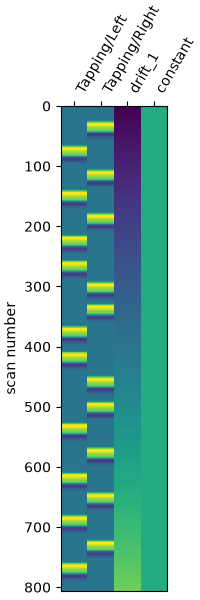
<Axes: label='conditions', ylabel='scan number'>
Now estimate the GLM model and prepare the results for viewing
print("Running GLM (can take some time)...")
glm_est = run_glm(raw, design_matrix, noise_model="auto")
del raw # save memory
Running GLM (can take some time)...
Now compute simple contrasts: LEFT, RIGHT, LEFT>RIGHT, and RIGHT>LEFT
contrast_matrix = np.eye(2)
basic_conts = dict(
[
(column, contrast_matrix[i])
for i, column in enumerate(design_matrix.columns)
if i < 2
]
)
contrast_L = basic_conts["Tapping/Left"]
contrast_R = basic_conts["Tapping/Right"]
contrast_LvR = contrast_L - contrast_R
contrast_RvL = contrast_R - contrast_L
# compute contrasts and put into a series of dicts for plotting
condict_hboLR = {
"LH FT HbO": glm_est.copy().pick("hbo").compute_contrast(contrast_L),
"RH FT HbO": glm_est.copy().pick("hbo").compute_contrast(contrast_R),
}
condict_hboLvsR = {
"LH FT > RH FT HbO": glm_est.copy().pick("hbo").compute_contrast(contrast_LvR),
"RH FT > LH FT HbO": glm_est.copy().pick("hbo").compute_contrast(contrast_RvL),
}
condict_hbrLR = {
"LH FT HbR": glm_est.copy().pick("hbr").compute_contrast(contrast_L),
"RH FT HbR": glm_est.copy().pick("hbr").compute_contrast(contrast_R),
}
condict_hbrLvsR = {
"LH FT > RH FT HbR": glm_est.copy().pick("hbr").compute_contrast(contrast_LvR),
"RH FT > LH FT HbR": glm_est.copy().pick("hbr").compute_contrast(contrast_RvL),
}
# make a single-color colormap with transparent "under" and "bad" (for NaNs/masked)
cmap = plt.get_cmap("Reds").copy()
cmap.set_under((1, 1, 1, 0)) # fully transparent for values < vmin
cmap.set_bad((1, 1, 1, 0)) # also transparent for NaNs / masked
# finally, make a convenience function for plotting the contrast data
def plot2glmtttopos(condict, thr_p, vlim):
fig, axes = plt.subplots(1, 2, figsize=(10, 6), layout="constrained")
for ax in axes:
ax.set_facecolor("white") # what shows through transparency
for con_it, (con_name, conest) in enumerate(condict.items()):
t_map = conest.data.stat()
p_map = conest.data.p_value()
t_map_masked = t_map.copy()
t_map_masked[p_map > thr_p] = np.ma.masked
chromo = str(np.unique(conest.get_channel_types())[0])
plot_topomap(
t_map_masked,
conest.info,
axes=axes[con_it],
vlim=vlim,
ch_type=chromo,
cmap=cmap,
**tm_kwargs,
)
axes[con_it].set_title(con_name, fontsize=15)
norm = mcolors.Normalize(vmin=vlim[0], vmax=vlim[1])
fig.colorbar(
plt.cm.ScalarMappable(norm=norm, cmap=cmap),
ax=axes,
fraction=0.05,
shrink=0.5,
orientation="horizontal",
label="Stat value",
)
return fig
/home/circleci/project/mne_nirs/statistics/_glm_level_first.py:814: UserWarning: t contrasts should be of length P=4, but it has length 2. The rest of the contrast was padded with zeros.
return _cc(
Now let’s go through each of these computed results in turn. Note that unlike the GLM Analysis (Measured) tutorial, here we’re following a standard approach in GLM neuroimaging analysis of only viewing the positive values of A>B and B>A contrast comparisons (equivalent to doing one-tailed rather than two-tailed t-tests). This is because the negative values of A>B are the same as the positive values of B>A, so viewing both the +ve and -ve sides of both contrasts is redundant.
Start with HbO activations relative to baseline for left-handed and right-handed tapping. We’ll also employ another standard neuroimaging approach of viewing a result at various significance levels, and looking at how it ‘resolves down’ spatially. Here are topoplots of the effect sizes for L>baseline and R>baseline finger tapping, at three significance thresholding levels (p<0.01, p<0.0001, p<1e-10)
fig = plot2glmtttopos(condict_hboLR, thr_p=0.01, vlim=(0.01, 10))
fig.suptitle("LR HBO p < 0.01", fontsize=16)
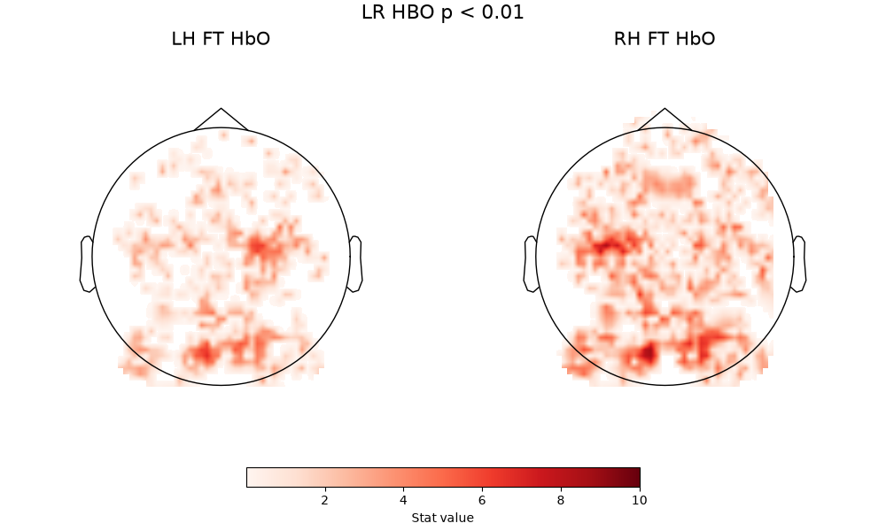
Text(0.5, 0.993055, 'LR HBO p < 0.01')
fig = plot2glmtttopos(condict_hboLR, thr_p=0.0001, vlim=(0.01, 10))
fig.suptitle("LR HBO p < 0.0001", fontsize=16)
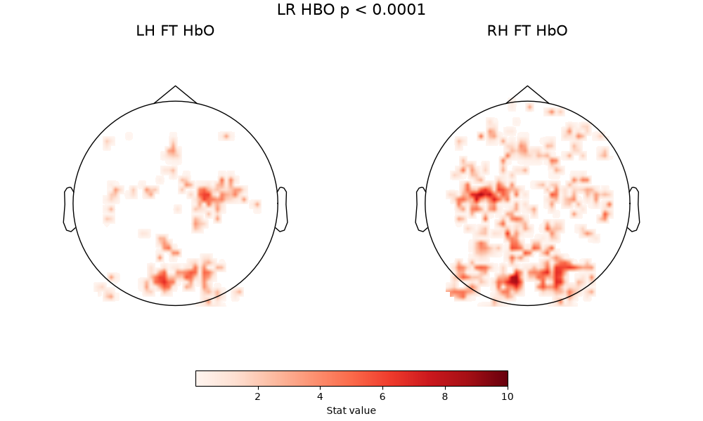
Text(0.5, 0.993055, 'LR HBO p < 0.0001')
fig = plot2glmtttopos(condict_hboLR, thr_p=1e-10, vlim=(0.01, 10))
fig.suptitle("LR HBO p < 1e-10", fontsize=16)
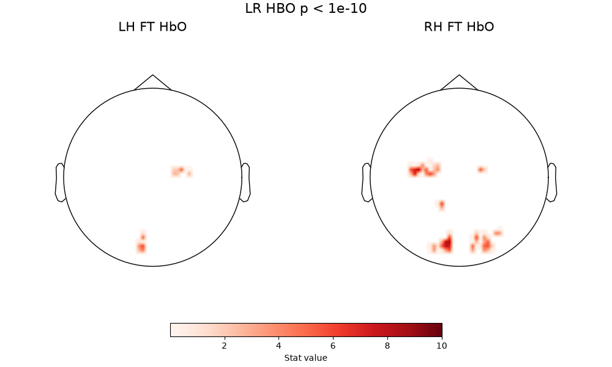
Text(0.5, 0.993055, 'LR HBO p < 1e-10')
A few comments here. First, there are two consistent zones of activation - motor cortex and occipital cortex - with a core pattern that does not change with thresholding. The fact that the pattern is visible at high thresholding levels indicates this is a very strong effect. The motor activation is correctly located and lateralized, so right-handed tapping clearly activates left motor cortex, and left-handed tapping activates right motor cortex. Both of these conditions also produce a strong visual activation - which is expected, because the visual stimulus (see above description) is more complex than the inter-block fixation cross.
When we then look at the contrast that compares left-handed tapping to right-handed tapping directly, and vice versa, we see activation of the same motor hotspots, but now a much weaker contribution from the occipital lobe. This is because the visual component is now controlled between the two conditions being compared, and what is being isolated is the difference between right-handed and left-handed tapping, which should in principle be fairly well-localized to motor cortex
fig = plot2glmtttopos(condict_hboLvsR, thr_p=1e-2, vlim=(0.01, 1.5))
fig.suptitle("LvsR HbO", fontsize=16)
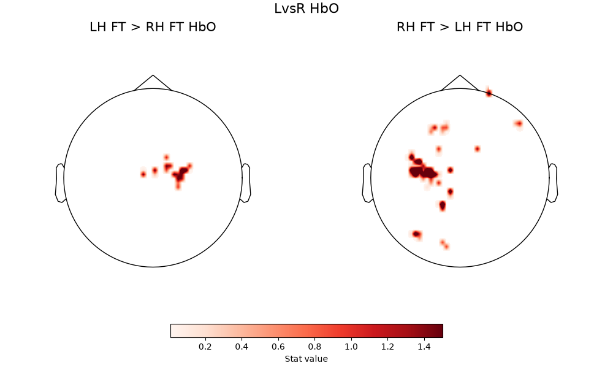
RH FT HbO, RH FT > LH FT HbO" class = "sphx-glr-single-img"/>Text(0.5, 0.993055, 'LvsR HbO')
When we look at the same comparisons with the HbR signal, some of the above carries through, and some does not.
First, the baseline comparisons do not replicate the patterns seen in HbO
fig = plot2glmtttopos(condict_hbrLR, thr_p=0.1, vlim=(0.001, 1.5))
fig.suptitle("LR HbR", fontsize=16)
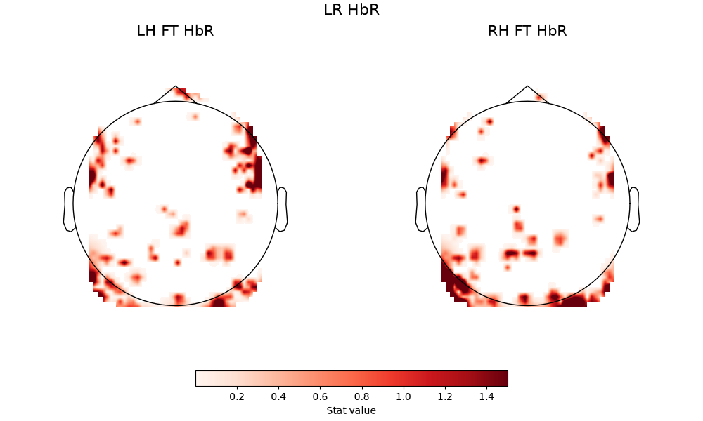
Text(0.5, 0.993055, 'LR HbR')
However, for the hemispheric difference contrasts, we again see the hemispheric selectivity of the motor response according to which hand is being tapped.
fig = plot2glmtttopos(condict_hbrLvsR, thr_p=0.1, vlim=(0.001, 1.5))
fig.suptitle("LvsR HbR", fontsize=16)
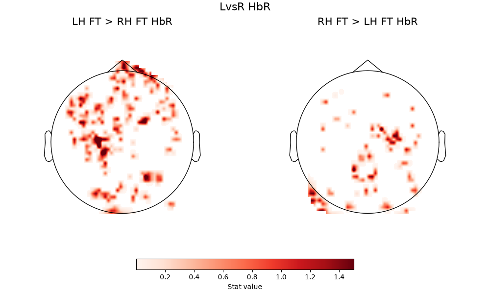
RH FT HbR, RH FT > LH FT HbR" class = "sphx-glr-single-img"/>Text(0.5, 0.993055, 'LvsR HbR')
Total running time of the script: (0 minutes 46.656 seconds)
Estimated memory usage: 652 MB